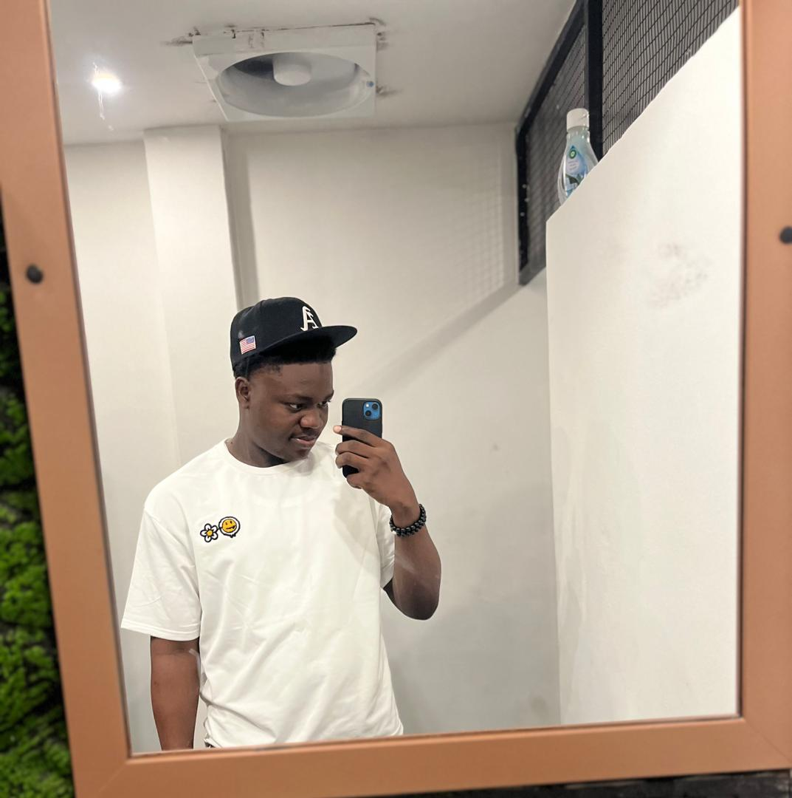

|  |
Halim Joachim, âgé de vingt ans, se distingue par son sérieux et son engagement. Grand amateur de culture japonaise, il se qualifie volontiers d'otaku et cultive une passion pour le basket, une pratique qui s'accorde parfaitement avec sa stature imposante. En outre, il nourrit un vif intérêt pour l'informatique, attiré par son caractère novateur, tout en appréciant les festivités et l'ambiance festive. |